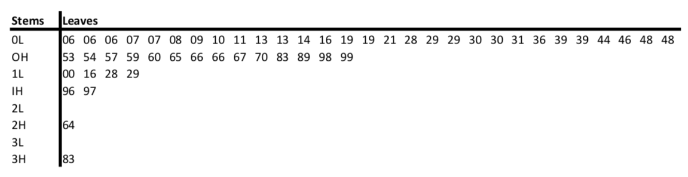

Section2.6Graphical Representation of Data
Data sets can range from small to very large. Visual representations of these data sets often allow you to see trends and reveal a lot about the distribution of the data values.
Also, probability mass functions for discrete variables can be graphed as a set of points but sometimes these points do not convey size very well. A visual representation of these functions needs to be addressed.
Subsection2.6.1Histograms
Frequency Histograms - height matters
Consider the data set given by
k
\(x_k\)
1
8
2
12
3
6
4
3
5
1
6
2
Relative Frequency Histograms - area matters. Add a Sage interact here as well.
Cummulative distributions - running totals. Demonstrate using a Sage interact.
Stem-and-Leaf Plot - Histogram with data. Using the state population data above, consider organizing the data but using a "two-pass sort" where you first roughly break data up into groups based upon ranges which relate to their first digit(s). In this case, let's break up into groups according to populations corresponding to 0-4 million, 5-9 million, 10-14 million, 15-19, million, 20-24 million, 25-29 million, 30-35 million, and 35-39 million. We can represent these classes by using the stems 0L, 0H, 1L, 1H, 2L, 2H, 3L, and 3H where the L and H represent the one's digits L in {0, 1, 2, 3, 4} and H in {5, 6, 7, 8, 9}. Once we group the data into these smaller groups then we can write the remaining portion of the number horizontally as leaves (in this case with one decimal place for all values.) This gives a step-and-leaf plot. If we additionally sort the data in the leaves then this gives you an ordered stem-and-leaf plot. For the state population data, the ordered stem-and-leaf plot is given by  Notice how it is easy to now see that most state populations are relatively small and that there are relatively few states with larger population. Also, notice that you can use this plot to relatively easily identify minimum, maximum, and other order statistics.
Box and Whisker Diagram - visual order statistics. This graphical display identifies the "5-number-summary" associated with the minimum, quartiles, and the maximum. That is, \(y_1, Q_1, Q_2, Q_3, y_n\). These values separate the data roughly into quarters. To distinguish these quarters connect \(y_1\) and \(Q_1\) with a straight line (a whisker) and do the same with \(Q_3\) and \(y_n\). Use a box to connect \(Q_1\) with \(Q_2\) and the same to connect \(Q_2\) with \(Q_3\). Then the boxed areas also identify the IQR.